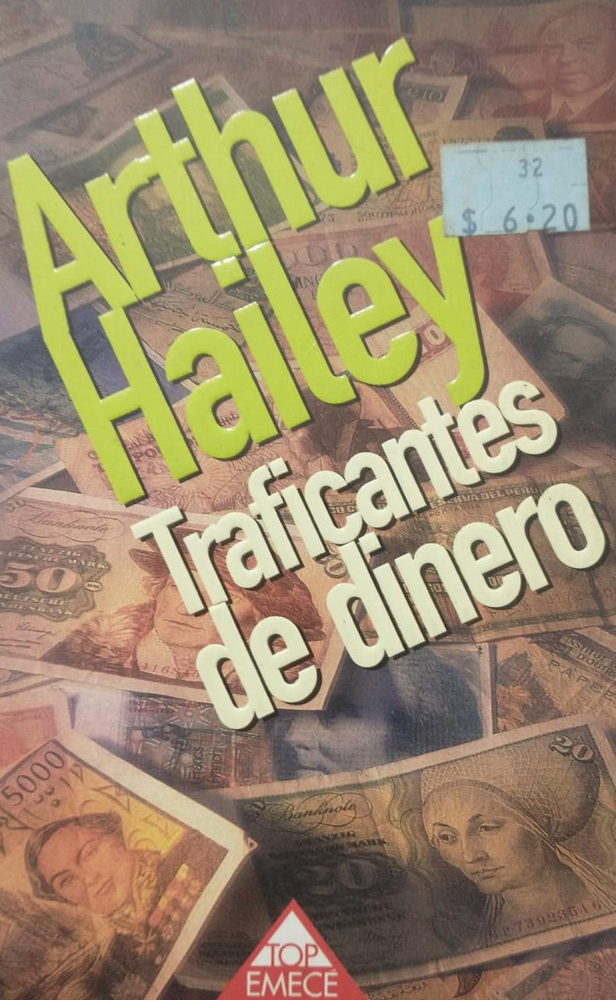
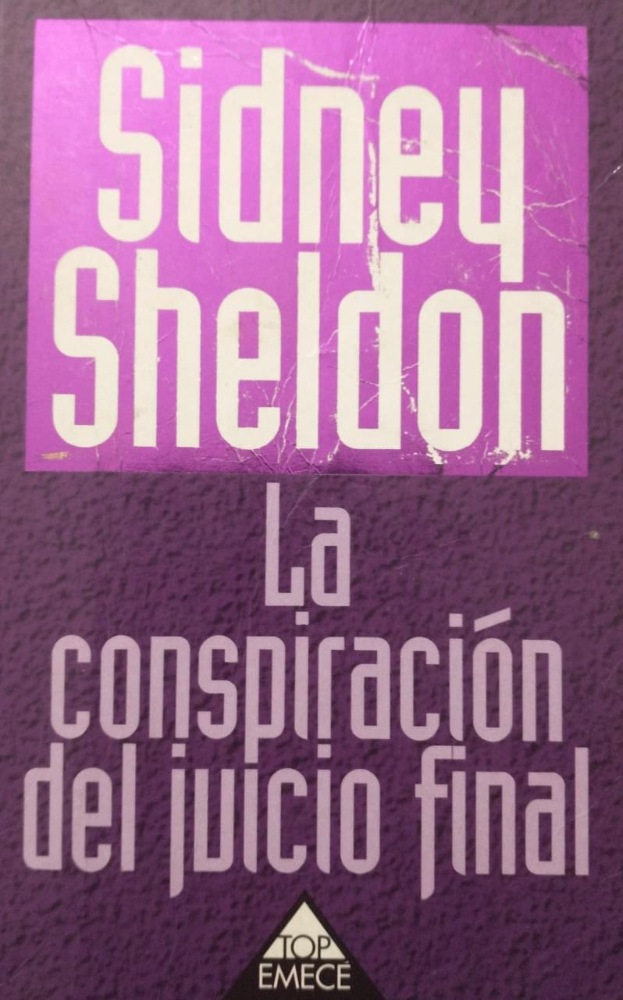
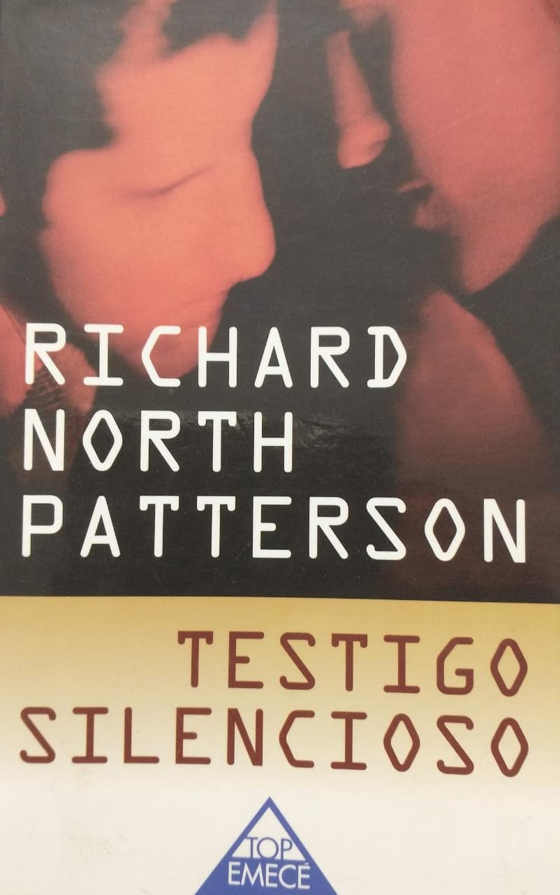
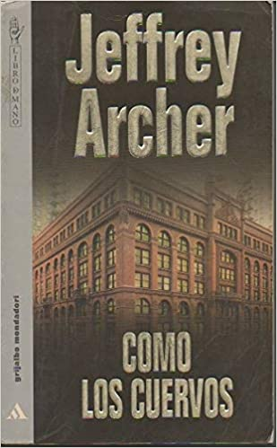
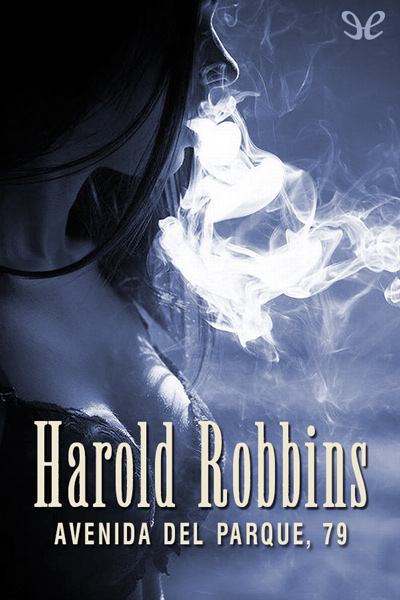

La novela policíaca es un género narrativo en donde la trama consiste generalmente en la resolución de un misterio de tipo criminal. El protagonista en la novela policíaca es normalmente un policía o un detective, habitualmente recurrente a lo largo de varias novelas del mismo autor, que, mediante la observación, el análisis y el razonamiento deductivo, consigue finalmente averiguar cómo, dónde, por qué se produjo el crimen y quién lo perpetró.
Crimen

Traficantes de dinero

La conspiración del juicio final
Me declaro culpable

Testigo silencioso
Tiempo de Matar

Estudio en Escarlata

Como los Cuervos
